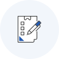

윤리경영 이해 및 정의


인권 정의
「대한민국헌법」및 법률에서 보장하거나 대한민국이 가입·비준한 국제인권조약 및 국제관습법에서 인정하는 인간으로서의 존엄과 가치 및 자유와 권리
인권경영 정의
중진공에 의한 인권침해 발생을 예방하고 인권친화적인 경영활동을 수행하는 것으로서, 중진공이 인권정책선언을 하고, 인권경영 실천·점검의무를 이행하며, 인권 침해 피해자에 대한 구제철자를 제공하는 것
인권경영 추진단계
중진공에 의한 인권침해 발생을 예방하고 인권친화적인 경영활동을 수행하는 것으로서, 중진공이 인권정책선언을 하고, 인권경영 실천·점검의무를 이행하며, 인권 침해 피해자에 대한 구제철자를 제공하는 것
- STEP 01
- 인권경영 체계구축
- 인권경영 규정 제정
- 인권경영헌장
- 인권경영이행지침 - 위원회 구성˙운영
- 인권경영 선언

- STEP 02
- 인권영향평가
- 평가지표 마련(체크리스트)
- 기관운영 및 주요 사업에 대한 평가
- 평가 결과 기반 인권경영 계획수립
- STEP 03
- 인권경영 실행˙공개
- 평가 취약분야 리스크 방지 조치
- 해당부서 조치에 대한 이행점검
- 인권경영 활동과정(보고서)을 홈페이지 등에 공개
- STEP 04
- 구제절차의 제공
- 구제절차 제도화
- 신고상담센터 운영
- 인권침해구제 위원회 구성
- 구제 매뉴얼 수립 - 신고 접수˙조사 후 구제절차 진행